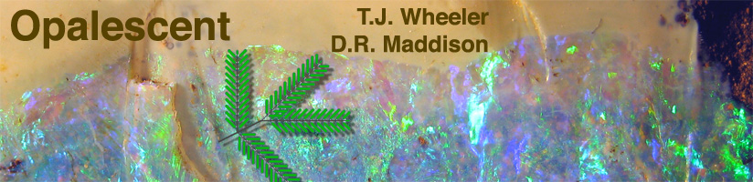
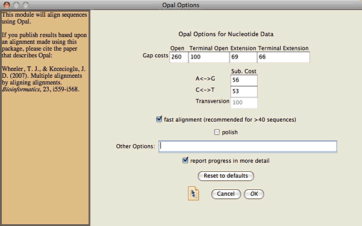
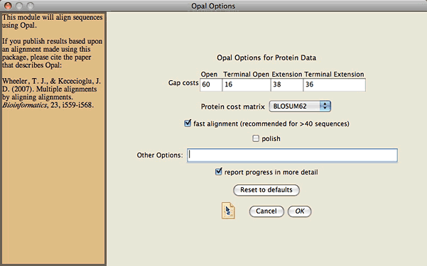

Opalescent is a Mesquite package that allows you to use Wheeler & Kececioglu's Opal program from within Mesquite. It requires Mesquite 2.6 or later. The current release version of Opalescent is 2.1.
If you use Opal from within Mesquite, please cite the paper that describes Opal:
Wheeler, T. J., & Kececioglu, J. D. 2007. Multiple alignments by aligning alignments. Bioinformatics, 23, i559-i568.
The version of Opal distributed with this package is 2.1.0
More details about Opal can be found on the Opal web site or by reading the README file.
Opal and Opalescent require Mesquite 2.6 or later.
When a new version of Opal for Mesquite or Opalescent is released, Mesquite will inform you of this when you start Mesquite, and it will give you an option to install the latest version. If you do not choose to do so at that time, you can later install the latest version by choosing the appropriate menu item from the File>Available to Install or Update.
To align a nucleotide or amino acid matrix using Opal, first display the matrix in Mesquite's character matrix editor. You can either align the entire matrix, or a contiguous block of sites. If you wish to align the entire matrix, choose Matrix>Align Multiple Sequences>Opal. If you wish instead to align only a particular section of the matrix, select a contiguous block of entire characters (columns), and then choose Matrix>Align Multiple Sequences>Opal. In the dialog box that will appear you can choose the options for the alignment.
This is the dialog box that appears if your matrix consists of nucleotide data:

This is the dialog box for amino acid data:

In this dialog box, you can adjust the costs of opening and extending gaps, with separate controls for terminal gaps.
The cost for a standard transversion subsitution for DNA data is 100. You can adjust the costs of transition substutions, with separate controls for A<->G transitions and C<->T transitions.
Two protein cost matrices are available, BLOSUM62 and BLOSUM50.
You can adjust the nature of the alignment algorithm using the "fast alignment" and "polish" options in the dialog box. If you choose "fast alignment", which is recommended if you have over 40 sequences or so, then Opal will use the align_method=profile (see Opal Documentation for details). If you turn off "fast alignment", it will use align_method=mixed.
By default, Opal will conduct a polishing step which generally improves the alignment; if done from within Mesquite, polishing will be default be the random_tree_twocut polish. However, you can turn off the polishing step.
You can invoke all other Opal options by entering them into the Other Options text field. You should use the syntax documented in the Opal Documentation . For example, if you wanted to
For example, you could adjust the number of tree iterations to 4 by entering "--tree_iterations 4" to the Other Options text field.
Note that you can override settings
from the rest of the dialog box using this field. For example, if you wanted
to use the exact align_method, you could
add "--align_method exact" to the text field.